{{s.num}}
{{s.h}}
{{para.txt}}
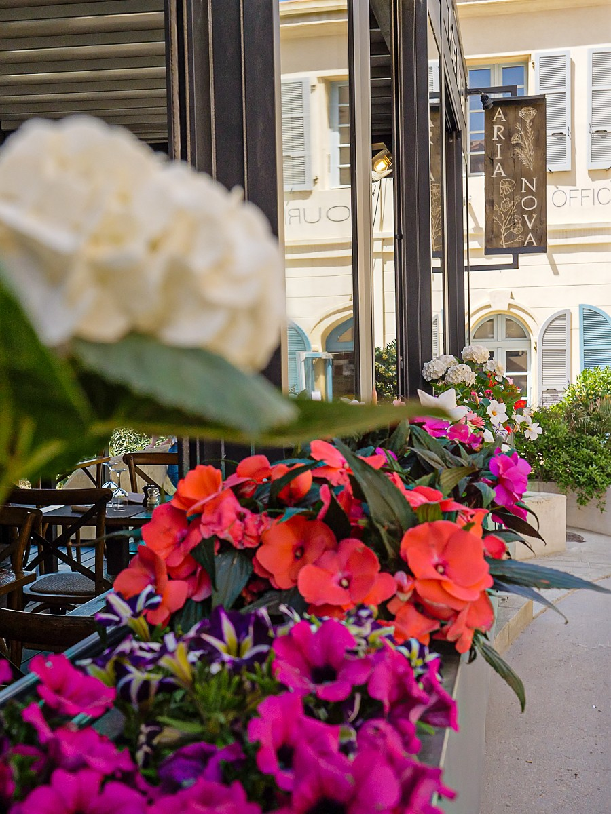
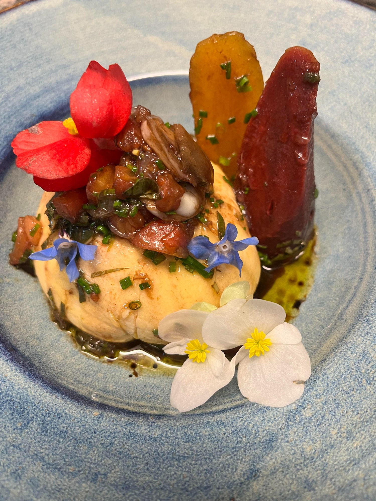
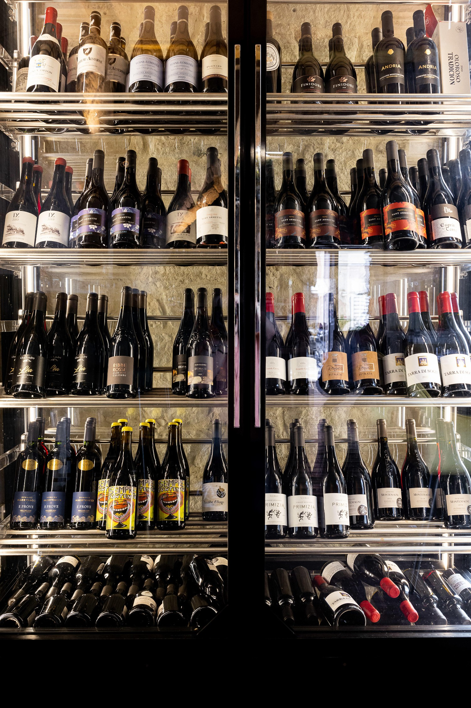
{{pageKicker}}
{{pageLead}}
{{s.num}}
{{para.txt}}
{{t.nav_maison}}
{{t.m_p}}
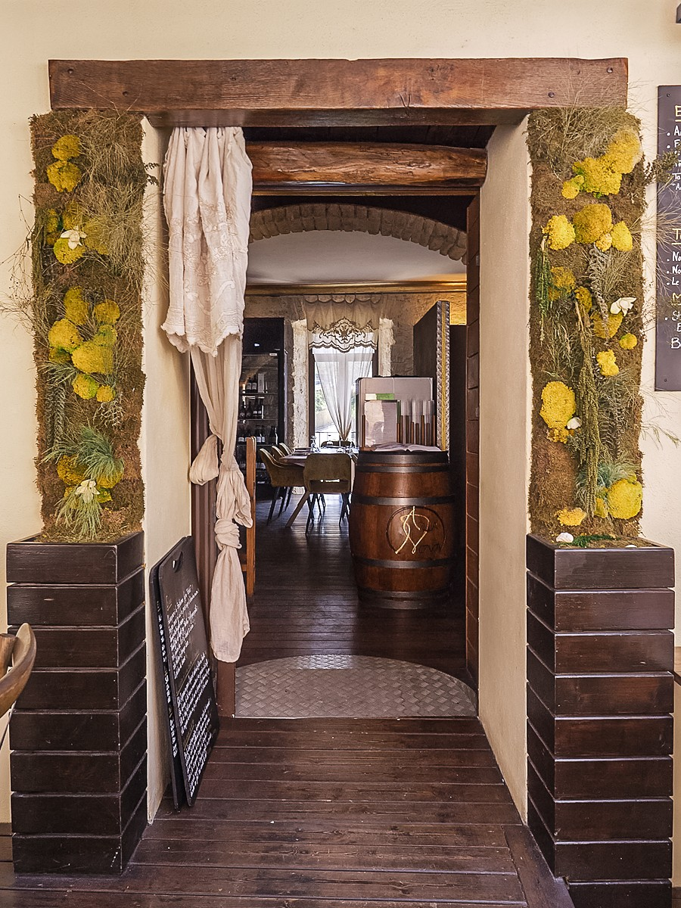
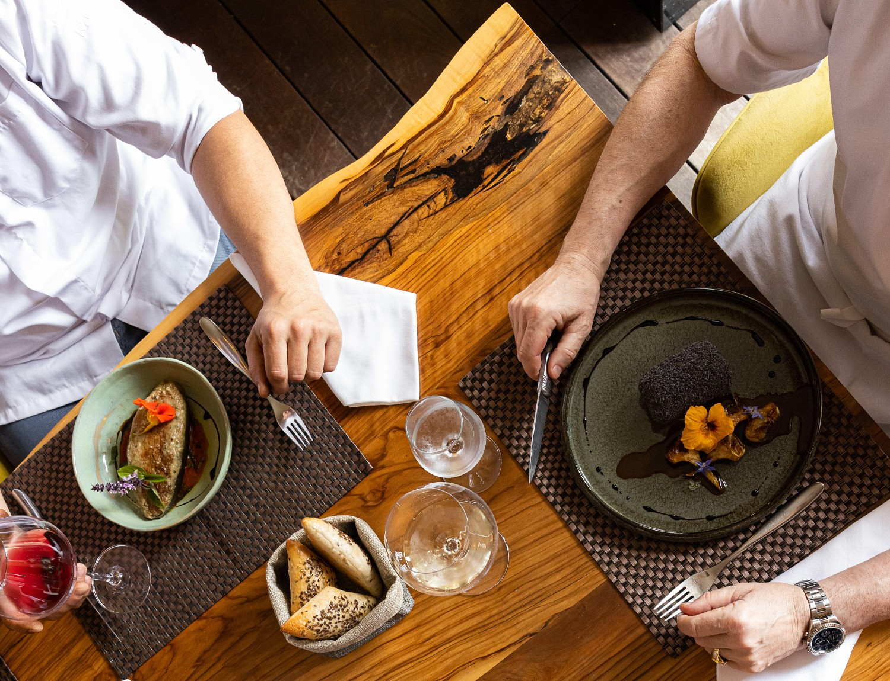
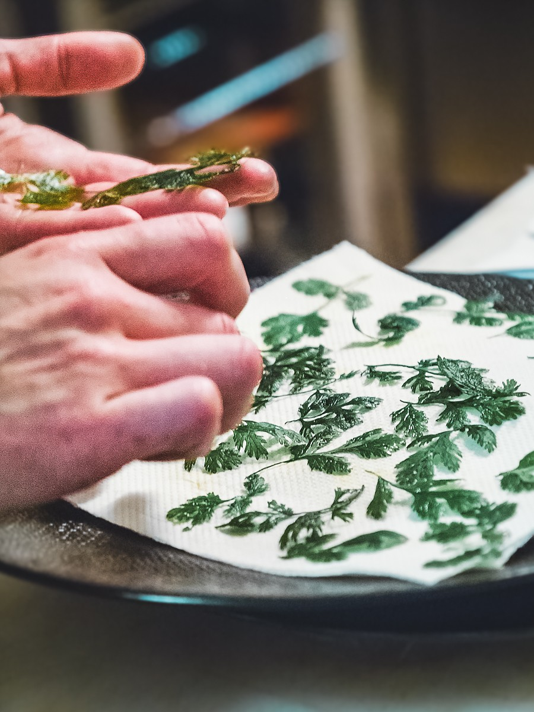
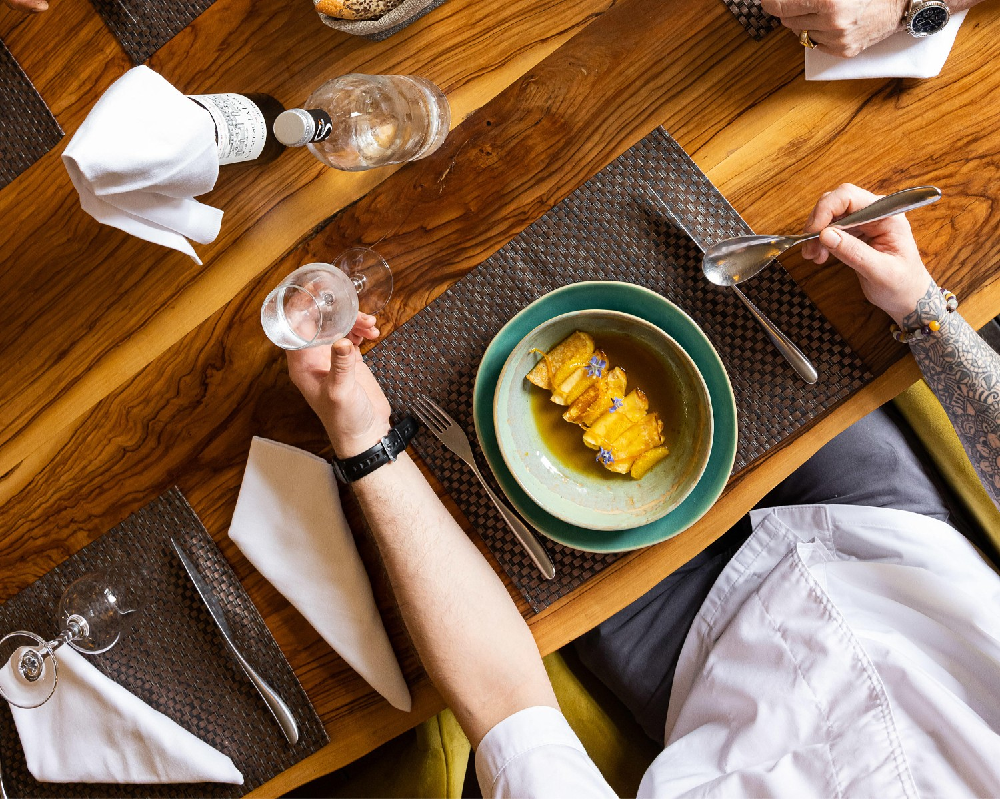
2013
{{t.st1}}
100 %
{{t.st2}}
1{{t.st3_sup}}
{{t.st3}}
5
{{t.st4}}
{{t.pl_eb}}
{{t.swipe}}
{{t.nav_carte}}
{{t.extrait}}
{{tabIntro}}
{{d.name}}
{{d.sub}}
{{d.price}}
{{g.title}}
{{wineHead.r}} {{wineHead.b}} {{wineHead.s}}{{t.midi_l}}
{{t.midi_t}}
{{t.midi_d}}
{{t.jour_l}}
{{t.jour_t}}
{{t.jour_d}}
{{t.quote}}
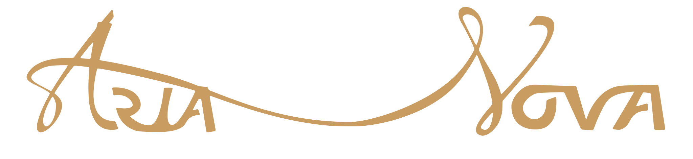
{{t.eq_eb}}
{{t.r_chef}}
{{t.b_chef}}
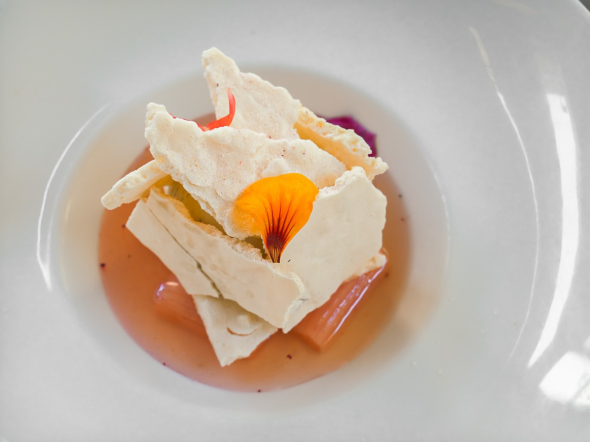
{{t.r_pat}}
{{t.b_pat}}
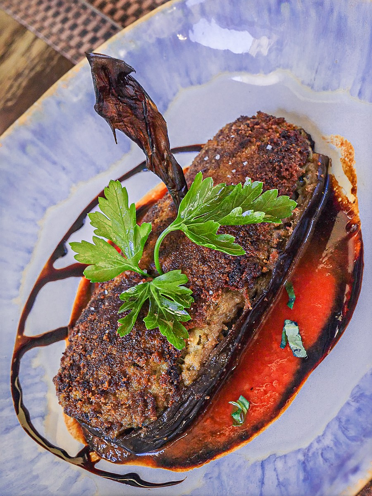
{{t.r_host}}
{{t.b_host}}
{{t.pr_eb}}
{{t.pr_p}}
{{p.name}}
{{p.text}}
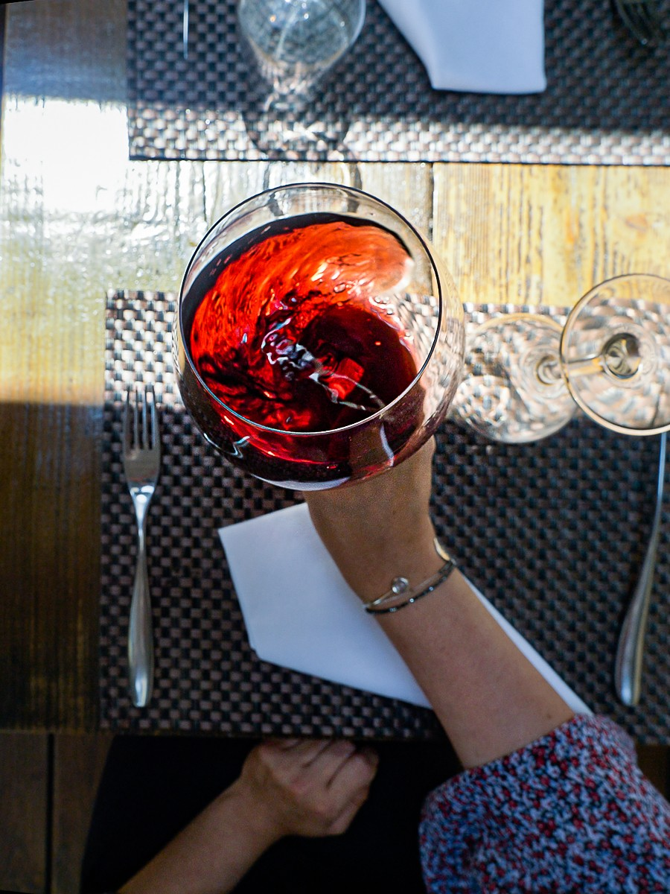
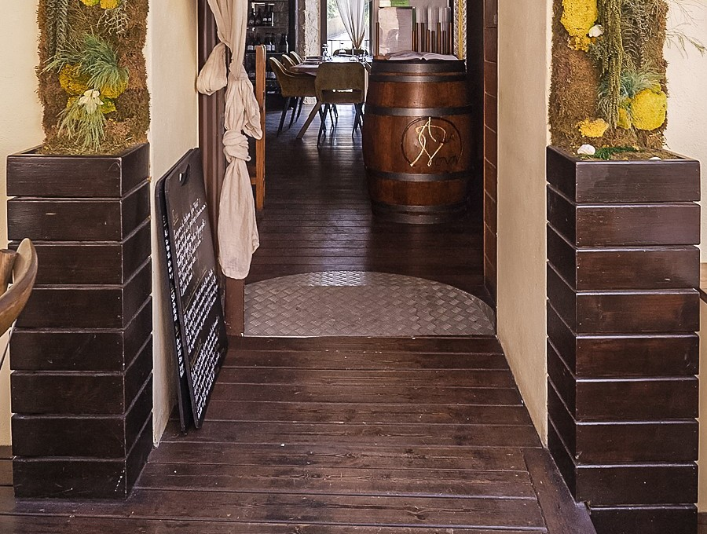